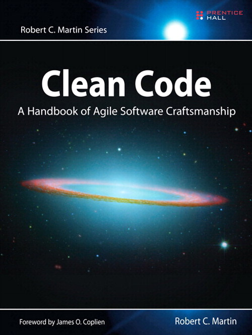
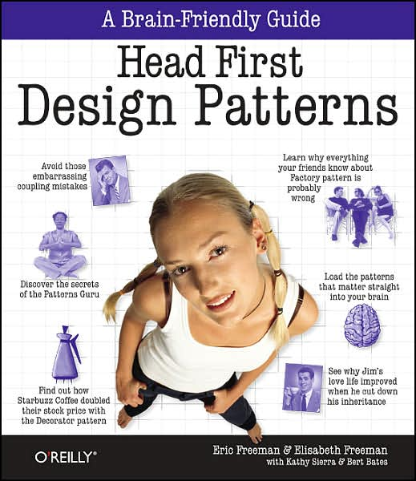
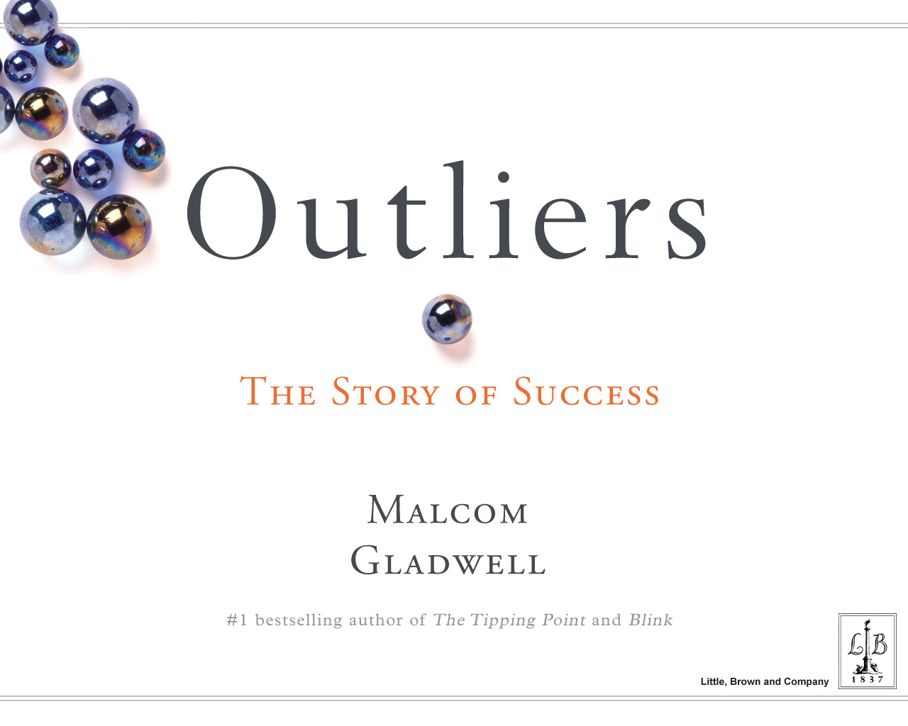

What you don't know
And where you can learn it
Lead / Architect
2009-2011
Languages
- COBOL
- VB
- C#
- Objective-C
- Ruby
- JavaScript
Frameworks
- ASP .Net
- WinForms
- WPF
- Silverlight
- Rails
- iOS
- Backbone.js
- Phone Gap
- Knockout.js
- Angular.js
Dev Levels
Jr -> Sr -> Lead -> Architect
Level 1
Landing your first job
Focus Skills
Only list what you want to work on
Be nice or I will endorse you for Enterprise Java.
- Some person on Twitter
Recruiters
Best Frenemies
Linkedin
Recruiters swim in these waters
What have you read recently?
What have you learned recently?
Admit ignorance
Ask questions to learn
GitHub
Share your code.
Fork, star, follow.
Reading Code
Code Quality > 100%
Working with Legacy Code
by Michael Feathers

Clean Code
by Robert Martin
"Uncle Bob"
You know you are working on clean code when each routine you read turns out to be pretty much what you expected.
- Ward Cunningham
Leave the campground cleaner than you found it.
- Boy scout rule
Distributed
Feature Branches
Pull Requests
Commit Logs
Blame
Single Responsibility Principle (SRP)
A class should have one, and only one, reason to change.
Open/Closed Principle (OCP)
Classes should be open for extension, but closed for modification.
Liskov Substitution Principle (LSP)
Functions that use pointers or references to base classes must be able to use objects of derived classes without knowing it.
Interface Segregation Principle (ISP)
Clients should not be forced to implement interfaces they don't use.
Dependency Inversion Principle (DI)
High-level modules should not depend on low-level modules. Both should depend on abstractions.

Head First Design Patterns
by Eric & Elizabeth Freeman
Managing People & Training Others
Level 4
Lead -> Architect
10:1
Reading code to writing code
Simple > Clever
A LOC is cheap.
- Someone brilliant
YAGNI
You Ain't Going to Need It
Optimization
Measure First.
Then Optimize.
Mind share
The more people know the technology, the easier it is to find affordable developers to do the work.

Outliers
by Malcolm Gladwell
10,000-Hour Rule
The key to success in any field, is to a large extent, a mater of practising a specific task for a total of around 10,000 hours.
The Happiness Advantage
by Shawn Achor
Success -> Happiness
Happiness -> Success
Happiness is a skill
And as with any other skill, we can practice to get better at being happy.
Consider these scenarios
Client Happy - Technology Terrible - Over budget
Client Unhappy - Technology Great - Over budget
Client Unhappy - Technology Terrible - Under budget
Books
- Clean Code
- Outliers
- The Happiness Advantage
Learn
- SOLID
- Testing
- Source Control
Getting Job
- Focused resume
- Don't BS interview
- Share code